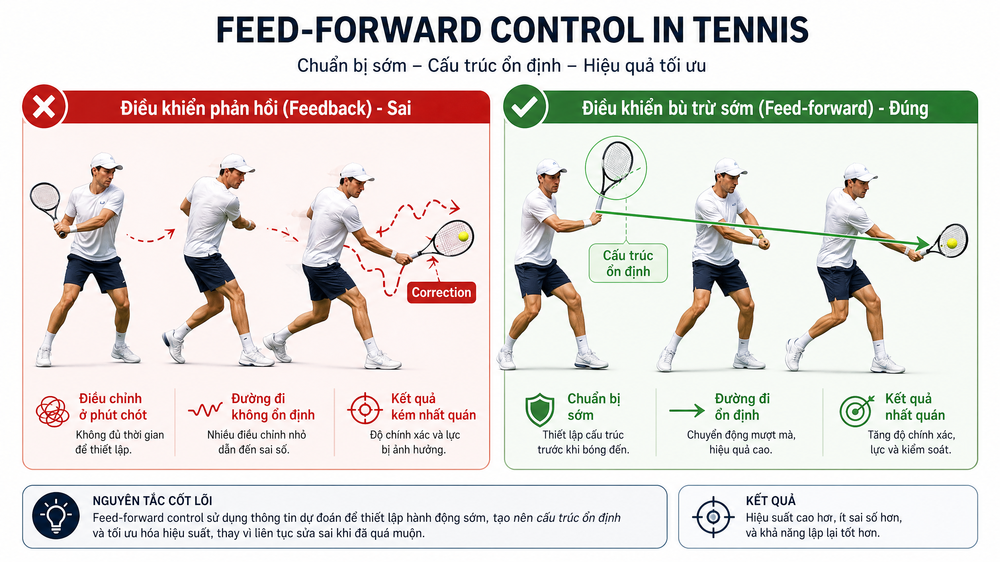

Visual Coaching Library
Cross-Stroke Principles — The Universal Patterns
5 cards · master-coach-direct
Một số nguyên tắc áp dụng cho mọi cú đánh: kinetic chain, agentic core, GRF→SSC, slingshot grip. Thẻ này tổng hợp các infographic đa-chủ đề để dùng làm reference nhanh.
Hai ảnh dưới đây: 'Mechanics of Modern Tennis' (comprehensive overview) và 'Future Champion Blueprint' (paradigm shift). Cùng nhau, chúng phủ 4 chủ đề lớn: grip, biomechanics, serve, forehand.
June 2026 — bilingual EN + VI
Source: MD notes + Gemini-generated images
Index of Cards
- The Mechanics of Modern Tennis (Master Overview) · quality: 4/5
- Future Champion: The Paradigm Shift · quality: 3/5
- Foundations - BMR model & movement circles · quality: 4/5
- Posture & body mechanics (Trầm Kiển · quality: 4/5
- Feed-forward vs feedback control methodology · quality: 4/5

EN: The Mechanics of Modern Tennis (Master Overview)
VI: Cơ học Tennis Hiện đại (Tổng quan Toàn diện)
Quality: 4/5 (vision-QA, June 2026) · Path: The Mechanics of Modern Tennis.png
Comprehensive multi-panel reference: 4 grip types, kinetic chain, 4-stage serve, speed benchmarks. Single image spanning grip+forehand+serve+biomechanics.
CUE (EN)
"One image, four principles: grip + chain + serve + speed. Reference card for any stroke."
CUE (VI)
"Một ảnh, bốn nguyên tắc: grip + chuỗi + serve + tốc độ. Thẻ tham khảo cho mọi cú."
What the diagram is saying
- Section 1 — 4 Grip Types: Continental, Eastern, Semi-Western, Western with court impact zones.
- Section 2 — Kinetic Chain: 95% energy from ground reaction force flowing up.
- Section 3 — 4-Stage Serve Model: Trigger → Trophy → Acceleration → Contact.
- Section 4 — Speed Benchmarks: Zverev 136/132 MPH, Martinez 129 MPH.
- Section 5 — Stretch-Shortening Cycle.
Practical Instructions (Hướng Dẫn Thực Hành)
1. Compact stroke > big backswing — modern tennis rewards efficient motion over long swings.
1. Compact > big backswing — tennis hiện đại thưởng chuyển động hiệu quả hơn vung dài.
2. Brief loop + hip forward = modern winner — the loop is small but the hip commit is big.
2. Brief loop + hông tới = người thắng hiện đại — loop nhỏ nhưng hông commit lớn.
3. Hop counter-balances rotation — the hop is part of the kinetic chain, not decoration.
3. Hop đối-trọng-lực xoay — hop là một phần chuỗi động học, không phải trang trí.
4. Foundation → Application → Integration — three levels of skill, each depends on the prior.
4. Foundation → Application → Integration — ba cấp kỹ năng, mỗi cấp phụ thuộc cấp trước.
5. Champion blueprint: build the foundation, apply under pressure, integrate into match play.
5. Bản thiết kế nhà vô địch: xây nền, áp dụng dưới áp lực, tích hợp vào trận đấu.

EN: Future Champion: The Paradigm Shift
VI: Nhà vô địch tương lai: Sự chuyển đổi mô hình
Quality: 3/5 (vision-QA, June 2026) · Path: Future Champion Tennis Blueprint.png
Big loop vs direct path. 4-pillar champion framework: Bio-Slingshot, Blitz-Chess, Situational Awareness, Mental Speed.
CUE (EN)
"The future champion trains brain + body together. Big loop is the past. Direct path + intelligence wins."
CUE (VI)
"Nhà vô địch tương lai tập não + cơ thể cùng nhau. Vòng lớn là quá khứ. Đường thẳng + trí tuệ thắng."
What the diagram is saying
- Pillar 1 — Traditional Myth vs Modern Reality: muscle memory vs neuro-motor pathway.
- Pillar 2 — Bio-Slingshot: whip-like kinetic chain.
- Pillar 3 — Tennis Blitz-Chess: plan, anticipate, disguise.
- Pillar 4 — Situational Awareness & Mental Speed.
Practical Instructions (Hướng Dẫn Thực Hành)
1. Old model: muscle memory through repetition. New model: embodied chain through perception.
1. Mô hình cũ: trí nhớ cơ bắp qua lặp lại. Mô hình mới: chuỗi nhập thể qua nhận thức.
2. Old model: technique is the goal. New model: technique emerges from situation.
2. Mô hình cũ: kỹ thuật là mục tiêu. Mô hình mới: kỹ thuật xuất hiện từ tình huống.
3. Old model: train the stroke. New model: train the perception, the stroke follows.
3. Mô hình cũ: tập cú đánh. Mô hình mới: tập nhận thức, cú đánh sẽ theo.
4. Champion mindset: every ball is a new problem, not a new repetition of the same stroke.
4. Tư duy nhà vô địch: mỗi bóng là vấn đề mới, không phải lặp lại cùng cú.
5. The paradigm shift is from doing-the-stroke to reading-and-responding with the stroke.
5. Chuyển đổi mô hình: từ làm-cú-đánh sang đọc-và-đáp-bằng-cú-đánh.

EN: Foundations - BMR model & movement circles
Quality: 4/5 (vision-QA, June 2026) · Path: Gemini_Generated_Image_detyhsdetyhsdety.png
Foundations - BMR model & movement circles
CUE (EN)
"Master-coach focus: Foundations - BMR model & movement circles"
CUE (VI)
""
What the diagram is saying
- Diagrammatic illustration: Foundations - BMR model & movement circles
Practical Instructions (Hướng Dẫn Thực Hành)
1. BMR (Basic Motor Reflex): the foundational movement patterns that all strokes share.
1. BMR (Phản Xạ Vận Động Cơ Bản): mẫu chuyển động nền mà mọi cú đánh cùng chia sẻ.
2. Movement circles: every shot is a circle (load, launch, contact, recover) — see the pattern.
2. Vòng chuyển động: mỗi cú là một vòng (nạp, phóng, tiếp xúc, hồi phục) — thấy mẫu.
3. Foundation drills: shadow swings, no-balls, focus on BMR patterns without ball pressure.
3. Bài tập nền: shadow swing, không bóng, tập trung vào mẫu BMR không áp lực bóng.
4. Application: add the ball, see if the BMR pattern holds under contact conditions.
4. Áp dụng: thêm bóng, xem mẫu BMR giữ vững trong điều kiện tiếp xúc.
5. Integration: use the same BMR pattern in match play, do not switch to a different stroke.
5. Tích hợp: dùng cùng mẫu BMR trong trận đấu, không chuyển sang cú khác.

EN: Posture & body mechanics (Trầm Kiển
Quality: 4/5 (vision-QA, June 2026) · Path: Gemini_Generated_Image_y9g5i6y9g5i6y9g5.png
Posture & body mechanics (Trầm Kiển / Truy Khuyu)
CUE (EN)
"Master-coach focus: Posture & body mechanics (Trầm Kiển / Truy Khuyu)"
CUE (VI)
""
What the diagram is saying
- Diagrammatic illustration: Posture & body mechanics (Trầm Kiển / Truy Khuyu)
Practical Instructions (Hướng Dẫn Thực Hành)
1. Head still = balance anchor — the head is the reference point for every other segment.
1. Đầu yên = neo cân bằng — đầu là điểm tham chiếu cho mọi phân đoạn khác.
2. Spine neutral — neither too straight (rigid) nor too curved (collapsed), find the middle.
2. Cột sống trung tính — không quá thẳng (cứng) cũng không quá cong (sụp), tìm giữa.
3. Knees soft — locked knees kill rotation, soft knees allow the kinetic chain to flow.
3. Gối mềm — gối khóa giết xoay, gối mềm cho phép chuỗi động học chảy.
4. Weight on balls of feet — flat feet = slow, balls of feet = ready to move.
4. Trọng lượng trên mũi chân — chân phẳng = chậm, mũi chân = sẵn sàng.
5. Posture is the chassis: bad posture = bad everything, fix the posture first.
5. Tư thế là khung: tư thế xấu = mọi thứ xấu, sửa tư thế trước.

EN: Feed-forward vs feedback control methodology
Quality: 4/5 (vision-QA, June 2026) · Path: image_1780864028821.png
Feed-forward vs feedback control methodology
CUE (EN)
"Master-coach focus: Feed-forward vs feedback control methodology"
CUE (VI)
""
What the diagram is saying
- Diagrammatic illustration: Feed-forward vs feedback control methodology
Practical Instructions (Hướng Dẫn Thực Hành)
1. Feed-forward: predict the ball, prepare the body, before the ball arrives.
1. Feed-forward: dự đoán bóng, chuẩn bị cơ thể, trước khi bóng tới.
2. Feedback: react to the ball, adjust the body, after the ball is in flight.
2. Feedback: phản ứng với bóng, điều chỉnh cơ thể, sau khi bóng đang bay.
3. Tennis is 80% feed-forward, 20% feedback — anticipation beats reaction.
3. Tennis là 80% feed-forward, 20% feedback — dự đoán thắng phản ứng.
4. Read shoulder rotation early: shoulder turn predicts direction before the ball is hit.
4. Đọc xoay vai sớm: vai quay dự đoán hướng trước khi bóng được đánh.
5. Tennis is 80% anticipation, 20% execution — train the eye, not just the body.
5. Tennis là 80% dự đoán, 20% thực thi — tập mắt, không chỉ thân.
3 takeaway cuối
- (1) Một ảnh overview, nhiều nguyên tắc áp dụng. Dùng làm reference nhanh khi học sinh mới.
- (2) Future champion = direct path + neuro-motor control. Big loop là quá khứ.
- (3) Tennis là hệ thống đa lớp: grip, chuỗi, serve, speed, chiến thuật, tâm lý — tất cả liên kết.
Drills tham khảo (20-min practice)
- 5 phút Reference card walk-through: in 1 ảnh overview, chỉ ra 4 stroke có ảnh hưởng bởi cùng nguyên tắc (grip, kinetic chain, etc.).
- 5 phút Cross-stroke shadow: forehand → volley → overhead — cùng grip, cùng chain, khác contact point.
- 5 phút Compare-and-contrast: forehand cũ của bạn vs forehand mới (sau khi đọc nguyên tắc). Ghi 3 thay đổi cụ thể.
- 5 phút Build a personal cheat-sheet: 1 trang A4 với 4 nguyên tắc + 4 cue của riêng bạn. Dán lên tường.
End of MULTI-TOPIC
Henry Pham · Visual Coaching Library · Pilot Series · June 2026